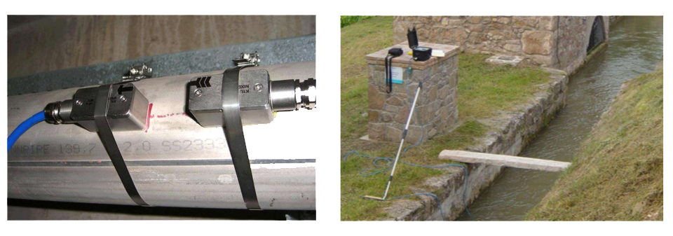

Servicios de verificación y aforo
Contamos con los especialistas y la tecnologia necesaria para realizar la medición y verificación de caudal en las instalaciones de nuestros clientes de manera rapida y exacta, sin la necesidad de modificar las tuberias o canales.

Objetivos del servicio de verificación y aforo:
- Verificarqueloscaudalimetrosinstaladosfuncionancorrectamente
- Evitar la recalibración o reparación de los medidores instalados si no es
necesario.
- Disponer de medición cuando un medidor esta averiado
- Medir el caudal para dimensionar correctamente las instalaciones
- Comprobar si hay obstrucciones en la tuberia
- Comprobarsiválvulasocompuertasfugan
- Verificareldesempeñodebombasyválvulas
- DarsoporteenlaadministracióndelrecursoHidricoenelsectorAgricola